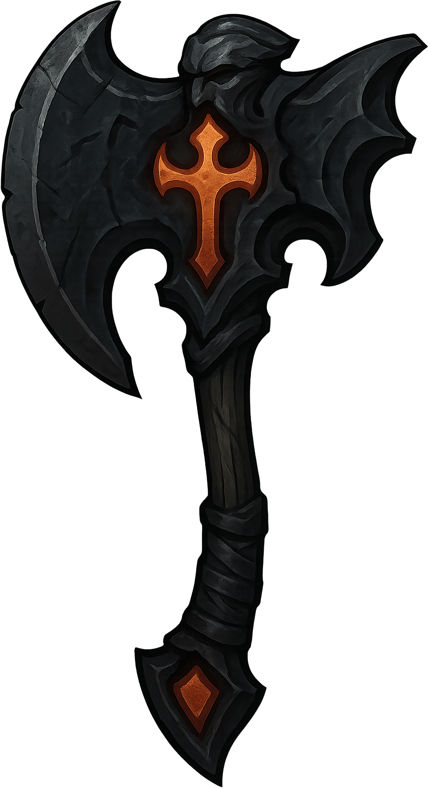
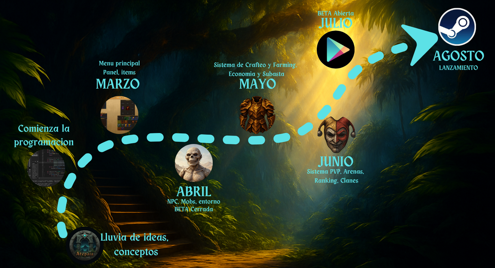
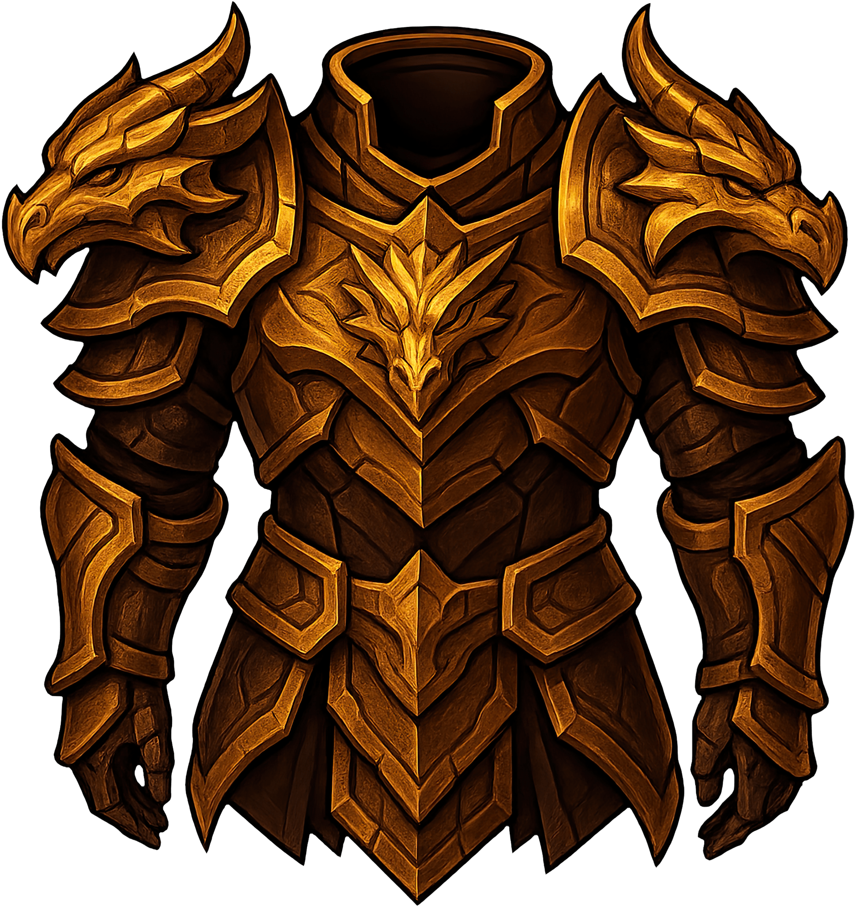

Economía Real y Artesanía
En Atepaia, el sistema no genera ítems. Cada espada es forjada por un maestro artesano y lleva su firma. El mercado es libre y controlado 100% por los jugadores.
Atepaia fusiona la estrategia masiva con la progresión de rol clásica.
Una experiencia independiente en Godot 4 diseñada para quienes buscan
Dificultad, Competencia y Comunidad.

En Atepaia, el sistema no genera ítems. Cada espada es forjada por un maestro artesano y lleva su firma. El mercado es libre y controlado 100% por los jugadores.

Mayo: Desembarco en PlayStore.
Junio: Forja de Nathari y Guerra de Clanes.
Julio: Gran Final de Temporada y Lanzamiento en Steam.
"El mundo está vivo y recuerda a su creador"

Sigue nuestro repositorio en GitHub para ver las actualizaciones diarias del código y contribuye a forjar el futuro de la Roca de Nathari.
Cada acción de los clanes deja una huella imborrable en la historia.
Todo es crafteado por jugadores.
Control territorial MMORTS.
Gloria semanal.
Ruinas cambiantes.
Mercado real.
Final histórico.
Únete hoy a la comunidad en Itch.io y asegura tu lugar en la historia de la Luna.